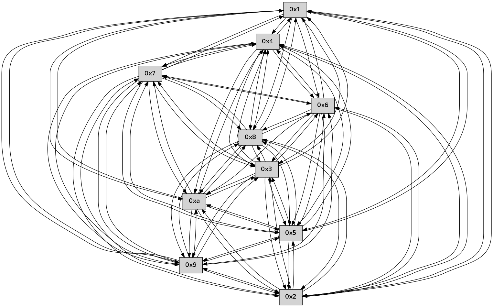

>> << IDX [start] -100 -25 -5 +0 +5 +25 +100 [275.486044168]
 Previous packets
270.009109 beacon05(faad) #0 coord=01,02,03,04,05,06,07,0a,09,08 cycle=688.0ms assoc 64 68 cd
270.019110 beacon06(faad) #0 coord=01,02,03,04,05,06,07,0a,09,08 cycle=688.0ms assoc 64 e6 1a
270.029112 beacon07(faad) #0 coord=01,02,03,04,05,06,07,0a,09,08 cycle=688.0ms assoc 64 9c 57
270.039114 beacon0a(faad) #0 coord=01,02,03,04,05,06,07,0a,09,08 cycle=688.0ms assoc 64 ed 5c
270.049115 beacon09(faad) #0 coord=01,02,03,04,05,06,07,0a,09,08 cycle=688.0ms assoc 64 63 8b
270.059114 beacon08(faad) #0 coord=01,02,03,04,05,06,07,0a,09,08 cycle=688.0ms assoc 64 19 c6
270.071540 [Hello(4): seq=177 sym=5,7,6,2,3,9,8,10,1 sysInfo= stat=5:13,0,0,0/7:2,0,0,0/6:7,0,0,0/2:1,0,0,0/3:4,0,0,0/9:9,0,0,0/8:9,0,0,0/10:8,0,0,0/1:4,0,0,0]
270.074892 [Hello(1): seq=85 sym=4,2,9,5,10,3,8,6,7 sysInfo= stat=4:14,0,0,0/2:1,0,0,0/9:5,0,0,0/5:3,0,0,0/10:3,0,0,0/3:11,0,0,0/8:3,0,0,0/6:8,0,0,0/7:11,0,0,0]
270.078550 [Hello(3): seq=177 sym=5,7,6,4,2,8,9,10,1 mpr= sysInfo= stat=5:2,0,0,0/7:12,0,0,0/6:7,0,0,0/4:15,0,0,0/2:2,0,0,0/8:15,0,0,0/9:7,0,0,0/10:13,0,0,0/1:2,0,0,0]
270.082686 [Hello(2): seq=174 sym=4,5,7,6,9,8,10,1 sysInfo= stat=4:9,0,0,0/5:13,0,0,0/7:6,0,0,0/6:6,0,0,0/9:9,0,0,0/8:7,0,0,0/10:3,0,0,0/1:0,0,0,0]
270.086984 [Hello(5): seq=177 sym=7,6,4,3,1,9,8,10,2 sysInfo= stat=7:14,0,0,0/6:10,0,0,0/4:8,0,0,0/3:6,0,0,0/1:4,0,0,0/9:8,0,0,0/8:1,0,0,0/10:7,0,0,0/2:10,0,0,0]
----------------------------------------------------------------------
270.757257 beacon01(faad) #0 coord=01,02,03,04,05,06,07,0a,09,08 cycle=688.0ms assoc
-- color-indic=0 64 30 13
270.767238 beacon02(faad) #0 coord=01,02,03,04,05,06,07,0a,09,08 cycle=688.0ms assoc 64 a3 22
270.777239 beacon03(faad) #0 coord=01,02,03,04,05,06,07,0a,09,08 cycle=688.0ms assoc 64 d9 6f
270.787239 beacon04(faad) #0 coord=01,02,03,04,05,06,07,0a,09,08 cycle=688.0ms assoc 64 ae 85
270.797240 beacon05(faad) #0 coord=01,02,03,04,05,06,07,0a,09,08 cycle=688.0ms assoc 64 d4 c8
270.807240 beacon06(faad) #0 coord=01,02,03,04,05,06,07,0a,09,08 cycle=688.0ms assoc 64 5a 1f
270.817240 beacon07(faad) #0 coord=01,02,03,04,05,06,07,0a,09,08 cycle=688.0ms assoc 64 20 52
270.827245 beacon0a(faad) #0 coord=01,02,03,04,05,06,07,0a,09,08 cycle=688.0ms assoc 64 51 59
270.837244 beacon09(faad) #0 coord=01,02,03,04,05,06,07,0a,09,08 cycle=688.0ms assoc 64 df 8e
270.847244 beacon08(faad) #0 coord=01,02,03,04,05,06,07,0a,09,08 cycle=688.0ms assoc 64 a5 c3
270.858719 [Hello(8): seq=120 sym=5,2,3,4,7,6,9,10,1 sysInfo= stat=5:2,0,0,0/2:2,0,0,0/3:3,0,0,0/4:5,0,0,0/7:14,0,0,0/6:15,0,0,0/9:4,0,0,0/10:2,0,0,0/1:5,0,0,0]
270.862078 [Hello(7): seq=177 sym=2,3,5,6,4,8,9,1 asym=10 sysInfo= stat=2:1,0,0,0/3:1,0,0,0/5:13,0,0,0/6:1,0,0,0/4:1,0,0,0/8:11,0,0,0/9:12,0,0,0/1:3,0,0,0/10:10,0,0,0]
270.865039 [Hello(6): seq=177 sym=2,3,5,4,7,9,8,10,1 sysInfo= stat=2:6,0,0,0/3:3,0,0,0/5:9,0,0,0/4:7,0,0,0/7:10,0,0,0/9:0,0,0,0/8:2,0,0,0/10:14,0,0,0/1:0,0,0,0]
270.867643 [Hello(9): seq=120 sym=5,2,3,4,7,6,8,10,1 sysInfo= stat=5:8,0,0,0/2:9,0,0,0/3:10,0,0,0/4:3,0,0,0/7:13,0,0,0/6:5,0,0,0/8:9,0,0,0/10:7,0,0,0/1:0,0,0,0]
270.872716 [Hello(10): seq=109 sym=6,3,2,5,9,8,7,4,1 sysInfo= stat=6:5,0,0,0/3:3,0,0,0/2:2,0,0,0/5:3,0,0,0/9:1,0,0,0/8:10,0,0,0/7:3,0,0,0/4:14,0,0,0/1:8,0,0,0]
----------------------------------------------------------------------
271.545387 beacon01(faad) #0 coord=01,02,03,04,05,06,07,0a,09,08 cycle=688.0ms assoc
-- color-indic=0 64 f4 1d
271.555370 beacon02(faad) #0 coord=01,02,03,04,05,06,07,0a,09,08 cycle=688.0ms assoc 64 67 2c
271.565370 beacon03(faad) #0 coord=01,02,03,04,05,06,07,0a,09,08 cycle=688.0ms assoc 64 1d 61
271.575372 beacon04(faad) #0 coord=01,02,03,04,05,06,07,0a,09,08 cycle=688.0ms assoc 64 6a 8b
271.585370 beacon05(faad) #0 coord=01,02,03,04,05,06,07,0a,09,08 cycle=688.0ms assoc 64 10 c6
271.595372 beacon06(faad) #0 coord=01,02,03,04,05,06,07,0a,09,08 cycle=688.0ms assoc 64 9e 11
271.605371 beacon07(faad) #0 coord=01,02,03,04,05,06,07,0a,09,08 cycle=688.0ms assoc 64 e4 5c
271.615375 beacon0a(faad) #0 coord=01,02,03,04,05,06,07,0a,09,08 cycle=688.0ms assoc 64 95 57
271.625376 beacon09(faad) #0 coord=01,02,03,04,05,06,07,0a,09,08 cycle=688.0ms assoc 64 1b 80
271.635376 beacon08(faad) #0 coord=01,02,03,04,05,06,07,0a,09,08 cycle=688.0ms assoc 64 61 cd
271.647173 [Hello(4): seq=178 sym=5,7,6,2,3,9,8,10,1 sysInfo= stat=5:14,0,0,0/7:3,0,0,0/6:8,0,0,0/2:2,0,0,0/3:5,0,0,0/9:10,0,0,0/8:10,0,0,0/10:9,0,0,0/1:5,0,0,0]
271.650531 [Hello(1): seq=86 sym=4,2,9,5,10,3,8,6,7 sysInfo= stat=4:14,0,0,0/2:2,0,0,0/9:6,0,0,0/5:4,0,0,0/10:4,0,0,0/3:12,0,0,0/8:4,0,0,0/6:9,0,0,0/7:12,0,0,0]
271.653190 [Hello(3): seq=178 sym=5,7,6,4,2,8,9,10,1 sysInfo= stat=5:3,0,0,0/7:13,0,0,0/6:8,0,0,0/4:15,0,0,0/2:3,0,0,0/8:0,0,0,0/9:8,0,0,0/10:14,0,0,0/1:2,0,0,0]
271.661968 [Hello(5): seq=178 sym=7,6,4,3,1,9,8,10,2 sysInfo= stat=7:15,0,0,0/6:11,0,0,0/4:8,0,0,0/3:6,0,0,0/1:4,0,0,0/9:9,0,0,0/8:2,0,0,0/10:8,0,0,0/2:10,0,0,0]
271.665383 [Hello(2): seq=175 sym=4,5,7,6,9,8,10,1 sysInfo= stat=4:9,0,0,0/5:14,0,0,0/7:7,0,0,0/6:7,0,0,0/9:10,0,0,0/8:8,0,0,0/10:4,0,0,0/1:0,0,0,0]
----------------------------------------------------------------------
272.333518 beacon01(faad) #0 coord=01,02,03,04,05,06,07,0a,09,08 cycle=688.0ms assoc
-- color-indic=0 64 48 18
272.343499 beacon02(faad) #0 coord=01,02,03,04,05,06,07,0a,09,08 cycle=688.0ms assoc 64 db 29
272.353501 beacon03(faad) #0 coord=01,02,03,04,05,06,07,0a,09,08 cycle=688.0ms assoc 64 a1 64
272.363501 beacon04(faad) #0 coord=01,02,03,04,05,06,07,0a,09,08 cycle=688.0ms assoc 64 d6 8e
272.373502 beacon05(faad) #0 coord=01,02,03,04,05,06,07,0a,09,08 cycle=688.0ms assoc 64 ac c3
272.383500 beacon06(faad) #0 coord=01,02,03,04,05,06,07,0a,09,08 cycle=688.0ms assoc 64 22 14
272.393502 beacon07(faad) #0 coord=01,02,03,04,05,06,07,0a,09,08 cycle=688.0ms assoc 64 58 59
272.403508 beacon0a(faad) #0 coord=01,02,03,04,05,06,07,0a,09,08 cycle=688.0ms assoc 64 29 52
272.413506 beacon09(faad) #0 coord=01,02,03,04,05,06,07,0a,09,08 cycle=688.0ms assoc 64 a7 85
272.423507 beacon08(faad) #0 coord=01,02,03,04,05,06,07,0a,09,08 cycle=688.0ms assoc 64 dd c8
272.434659 [Hello(6): seq=178 sym=2,3,5,4,7,9,8,10,1 sysInfo= stat=2:7,0,0,0/3:4,0,0,0/5:10,0,0,0/4:8,0,0,0/7:10,0,0,0/9:1,0,0,0/8:2,0,0,0/10:15,0,0,0/1:1,0,0,0]
272.437982 [Hello(7): seq=178 sym=2,3,5,6,4,8,9,10,1 sysInfo= stat=2:2,0,0,0/3:2,0,0,0/5:14,0,0,0/6:2,0,0,0/4:2,0,0,0/8:11,0,0,0/9:13,0,0,0/10:11,0,0,0/1:4,0,0,0]
272.440684 [Hello(10): seq=110 sym=6,3,2,5,9,8,7,4,1 sysInfo= stat=6:5,0,0,0/3:4,0,0,0/2:3,0,0,0/5:4,0,0,0/9:1,0,0,0/8:10,0,0,0/7:3,0,0,0/4:15,0,0,0/1:9,0,0,0]
272.446262 [Hello(9): seq=121 sym=5,2,3,4,7,6,8,10,1 sysInfo= stat=5:9,0,0,0/2:10,0,0,0/3:11,0,0,0/4:4,0,0,0/7:13,0,0,0/6:5,0,0,0/8:9,0,0,0/10:8,0,0,0/1:1,0,0,0]
272.450752 [Hello(8): seq=121 sym=5,2,3,4,7,6,9,10,1 sysInfo= stat=5:3,0,0,0/2:3,0,0,0/3:4,0,0,0/4:6,0,0,0/7:15,0,0,0/6:0,0,0,0/9:5,0,0,0/10:3,0,0,0/1:6,0,0,0]
----------------------------------------------------------------------
273.121648 beacon01(faad) #0 coord=01,02,03,04,05,06,07,0a,09,08 cycle=688.0ms assoc
-- color-indic=0 64 7c 00
273.131631 beacon02(faad) #0 coord=01,02,03,04,05,06,07,0a,09,08 cycle=688.0ms assoc 64 ef 31
273.141629 beacon03(faad) #0 coord=01,02,03,04,05,06,07,0a,09,08 cycle=688.0ms assoc 64 95 7c
273.151630 beacon04(faad) #0 coord=01,02,03,04,05,06,07,0a,09,08 cycle=688.0ms assoc 64 e2 96
273.161630 beacon05(faad) #0 coord=01,02,03,04,05,06,07,0a,09,08 cycle=688.0ms assoc 64 98 db
273.171630 beacon06(faad) #0 coord=01,02,03,04,05,06,07,0a,09,08 cycle=688.0ms assoc 64 16 0c
273.181632 beacon07(faad) #0 coord=01,02,03,04,05,06,07,0a,09,08 cycle=688.0ms assoc 64 6c 41
273.191637 beacon0a(faad) #0 coord=01,02,03,04,05,06,07,0a,09,08 cycle=688.0ms assoc 64 1d 4a
273.201635 beacon09(faad) #0 coord=01,02,03,04,05,06,07,0a,09,08 cycle=688.0ms assoc 64 93 9d
273.211635 beacon08(faad) #0 coord=01,02,03,04,05,06,07,0a,09,08 cycle=688.0ms assoc 64 e9 d0
273.223754 [Hello(4): seq=179 sym=5,7,6,2,3,9,8,10,1 sysInfo= stat=5:15,0,0,0/7:4,0,0,0/6:9,0,0,0/2:3,0,0,0/3:6,0,0,0/9:11,0,0,0/8:11,0,0,0/10:10,0,0,0/1:6,0,0,0]
273.226433 [Hello(2): seq=176 sym=4,5,7,6,9,8,10,1 sysInfo= stat=4:9,0,0,0/5:14,0,0,0/7:8,0,0,0/6:8,0,0,0/9:11,0,0,0/8:9,0,0,0/10:5,0,0,0/1:0,0,0,0]
273.230745 [Hello(3): seq=179 sym=5,7,6,4,2,8,9,10,1 sysInfo= stat=5:4,0,0,0/7:14,0,0,0/6:9,0,0,0/4:15,0,0,0/2:4,0,0,0/8:1,0,0,0/9:9,0,0,0/10:15,0,0,0/1:2,0,0,0]
273.235190 [Hello(5): seq=179 sym=7,6,4,3,1,9,8,10,2 sysInfo= stat=7:0,0,0,0/6:12,0,0,0/4:8,0,0,0/3:6,0,0,0/1:4,0,0,0/9:10,0,0,0/8:3,0,0,0/10:9,0,0,0/2:11,0,0,0]
----------------------------------------------------------------------
273.909780 beacon01(faad) #0 coord=01,02,03,04,05,06,07,0a,09,08 cycle=688.0ms assoc
-- color-indic=0 64 c0 05
273.919762 beacon02(faad) #0 coord=01,02,03,04,05,06,07,0a,09,08 cycle=688.0ms assoc 64 53 34
273.929762 beacon03(faad) #0 coord=01,02,03,04,05,06,07,0a,09,08 cycle=688.0ms assoc 64 29 79
273.939763 beacon04(faad) #0 coord=01,02,03,04,05,06,07,0a,09,08 cycle=688.0ms assoc 64 5e 93
273.949762 beacon05(faad) #0 coord=01,02,03,04,05,06,07,0a,09,08 cycle=688.0ms assoc 64 24 de
273.959764 beacon06(faad) #0 coord=01,02,03,04,05,06,07,0a,09,08 cycle=688.0ms assoc 64 aa 09
273.969763 beacon07(faad) #0 coord=01,02,03,04,05,06,07,0a,09,08 cycle=688.0ms assoc 64 d0 44
273.979767 beacon0a(faad) #0 coord=01,02,03,04,05,06,07,0a,09,08 cycle=688.0ms assoc 64 a1 4f
273.989768 beacon09(faad) #0 coord=01,02,03,04,05,06,07,0a,09,08 cycle=688.0ms assoc 64 2f 98
273.999767 beacon08(faad) #0 coord=01,02,03,04,05,06,07,0a,09,08 cycle=688.0ms assoc 64 55 d5
274.010931 [Hello(10): seq=111 sym=3,2,5,9,8,7,4,1 sysInfo= stat=3:5,0,0,0/2:4,0,0,0/5:5,0,0,0/9:2,0,0,0/8:11,0,0,0/7:3,0,0,0/4:15,0,0,0/1:10,0,0,0]
274.015530 [Hello(7): seq=179 sym=2,3,5,6,4,8,9,10,1 sysInfo= stat=2:3,0,0,0/3:3,0,0,0/5:15,0,0,0/6:2,0,0,0/4:2,0,0,0/8:12,0,0,0/9:14,0,0,0/10:12,0,0,0/1:5,0,0,0]
274.021431 [Hello(6): seq=179 sym=2,3,5,4,7,9,8,10,1 sysInfo= stat=2:8,0,0,0/3:5,0,0,0/5:11,0,0,0/4:8,0,0,0/7:11,0,0,0/9:2,0,0,0/8:3,0,0,0/10:0,0,0,0/1:1,0,0,0]
----------------------------------------------------------------------
274.697911 beacon01(faad) #0 coord=01,02,03,04,05,06,07,0a,09,08 cycle=688.0ms assoc
-- color-indic=0 64 04 0b
274.707894 beacon02(faad) #0 coord=01,02,03,04,05,06,07,0a,09,08 cycle=688.0ms assoc 64 97 3a
274.717894 beacon03(faad) #0 coord=01,02,03,04,05,06,07,0a,09,08 cycle=688.0ms assoc 64 ed 77
274.727896 beacon04(faad) #0 coord=01,02,03,04,05,06,07,0a,09,08 cycle=688.0ms assoc 64 9a 9d
274.737893 beacon05(faad) #0 coord=01,02,03,04,05,06,07,0a,09,08 cycle=688.0ms assoc 64 e0 d0
274.747894 beacon06(faad) #0 coord=01,02,03,04,05,06,07,0a,09,08 cycle=688.0ms assoc 64 6e 07
274.757894 beacon07(faad) #0 coord=01,02,03,04,05,06,07,0a,09,08 cycle=688.0ms assoc 64 14 4a
274.767898 beacon0a(faad) #0 coord=01,02,03,04,05,06,07,0a,09,08 cycle=688.0ms assoc 64 65 41
274.777898 beacon09(faad) #0 coord=01,02,03,04,05,06,07,0a,09,08 cycle=688.0ms assoc 64 eb 96
274.787899 beacon08(faad) #0 coord=01,02,03,04,05,06,07,0a,09,08 cycle=688.0ms assoc 64 91 db
274.799386 [Hello(4): seq=180 sym=5,7,6,2,3,9,8,10,1 sysInfo= stat=5:0,0,0,0/7:4,0,0,0/6:10,0,0,0/2:4,0,0,0/3:7,0,0,0/9:12,0,0,0/8:11,0,0,0/10:10,0,0,0/1:6,0,0,0]
274.804626 [Hello(2): seq=177 sym=4,5,7,6,3,9,8,10,1 sysInfo= stat=4:9,0,0,0/5:15,0,0,0/7:9,0,0,0/6:9,0,0,0/3:0,0,0,0/9:11,0,0,0/8:9,0,0,0/10:6,0,0,0/1:0,0,0,0]
274.807320 [Hello(5): seq=180 sym=7,6,4,3,1,9,8,10,2 sysInfo= stat=7:0,0,0,0/6:13,0,0,0/4:8,0,0,0/3:6,0,0,0/1:4,0,0,0/9:11,0,0,0/8:4,0,0,0/10:9,0,0,0/2:11,0,0,0]
274.814049 [Hello(3): seq=180 sym=5,7,6,4,2,8,9,10,1 sysInfo= stat=5:5,0,0,0/7:15,0,0,0/6:10,0,0,0/4:15,0,0,0/2:4,0,0,0/8:1,0,0,0/9:9,0,0,0/10:0,0,0,0/1:2,0,0,0]